Bomb Defusal Manual
EXPANDED MOD VERSION
SECTION 1WWW.KEEPTALKINGGAME.COM
KTANE.TIMWI.DE
WWW.KEEPTALKINGGAME.COM
KTANE.TIMWI.DE
Welcome to the dangerous and challenging world of bomb defusing.
Study this manual carefully; you are the expert. In these pages you will find everything you need to know to defuse even the most insidious of bombs.
And remember — One small oversight and it could all be over!
A bomb will explode when its countdown timer reaches 0:00 or when too many strikes have been recorded. The only way to defuse a bomb is to disarm all of its modules before its countdown timer expires.
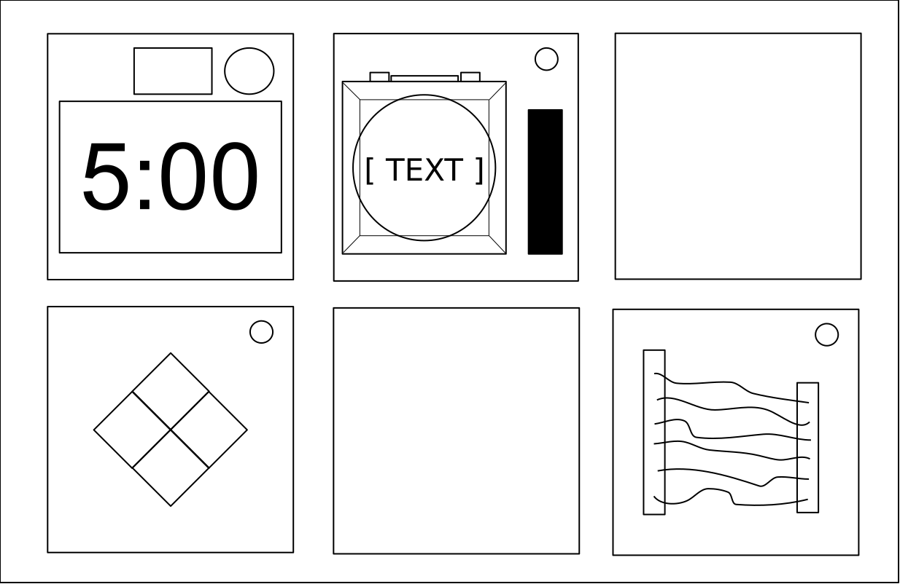 Front | 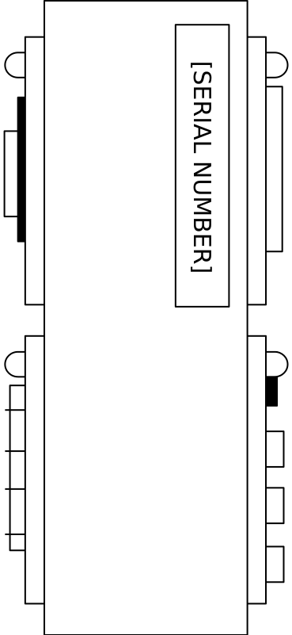 Side |
Each bomb will include up to 11 modules that must be disarmed. Each module is discrete and can be disarmed in any order.
Instructions for disarming modules can be found in Section 1. "Needy" modules present a special case and are described in Section 2.
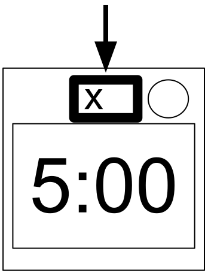
When the Defuser makes a mistake, the bomb will record a strike which will be displayed on the indicator above the countdown timer. Bombs with a strike indicator will explode upon the third strike. The timer will begin to count down faster after a strike has been recorded.
If no strike indicator is present above the countdown timer, the bomb will explode upon the first strike, leaving no room for error.
Some disarming instructions will require specific information about the bomb, such as the serial number. This type of information can typically be found on the top, bottom, or sides of the bomb casing. See the appendices below for identification instructions that will be useful in disarming certain modules.
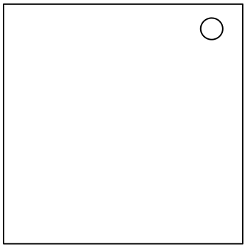
Modules can usually be identified by an LED in the corner, normally the top right. When this LED is lit green, the module has been disarmed.
All modules must be disarmed to defuse the bomb.
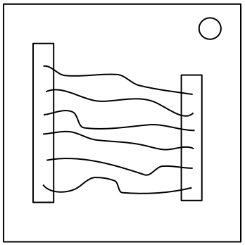
Wires are the lifeblood of electronics! Wait, no, electricity is the lifeblood. Wires are more like the arteries. The veins? No matter…
| 3 wires:
If there are no red wires, cut the second wire. Otherwise, if the last wire is white, cut the last wire. Otherwise, if there is more than one blue wire, cut the last blue wire. Otherwise, cut the last wire. |
| 4 wires:
If there is more than one red wire and the last digit of the serial number is odd, cut the last red wire. Otherwise, if the last wire is yellow and there are no red wires, cut the first wire. Otherwise, if there is exactly one blue wire, cut the first wire. Otherwise, if there is more than one yellow wire, cut the last wire. Otherwise, cut the second wire. |
| 5 wires:
If the last wire is black and the last digit of the serial number is odd, cut the fourth wire. Otherwise, if there is exactly one red wire and there is more than one yellow wire, cut the first wire. Otherwise, if there are no black wires, cut the second wire. Otherwise, cut the first wire. |
| 6 wires:
If there are no yellow wires and the last digit of the serial number is odd, cut the third wire. Otherwise, if there is exactly one yellow wire and there is more than one white wire, cut the fourth wire. Otherwise, if there are no red wires, cut the last wire. Otherwise, cut the fourth wire. |
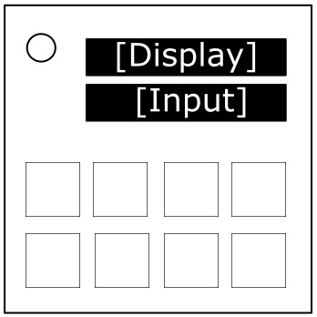
Randomly punching in the letters will eventually give me another word. One of the arrangements must work, right?
The display shows a word. Rearrange the letters to form another word. Note that the status light is on the top left of the module.
See Appendix Sword for an anagrams table reference.
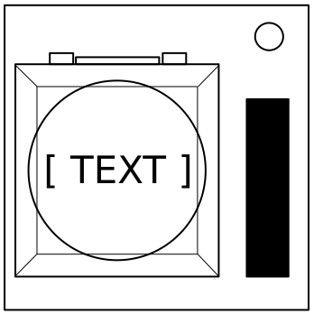
You might think that a button telling you to press it is pretty straightforward. That’s the kind of thinking that gets people exploded.
See Appendix A for indicator identification reference.
See Appendix B for battery identification reference.
Follow these rules in the order they are listed. Perform the first action that applies:
If you start holding the button down, a colored strip will light up on the right side of the module. Based on its color, you must release the button at a specific point in time:

Math is easy. But is it easy when the numbers are in another language? Let’s find out.
Decipher the characters on the display into numbers and solve the answer to the question. Enter the answer with the keypad and press ‘=’ to submit it. Use ‘-’ to toggle the negative sign for negative answers. There’s no delete button so press those buttons carefully!
For example: =(+=( translates to 1+1
The answer to enter is 2.
| Character | Number |
|---|---|
| :) | 0 |
| =( | 1 |
| (: | 2 |
| )= | 3 |
| :( | 4 |
| ): | 5 |
| =) | 6 |
| (= | 7 |
| :| | 8 |
| |: | 9 |

These letters are confusing. I think they're in the wrong order.
The display shows a scrambled word. Decipher the word and punch it in to solve this module.
See Appendix Sword for an anagrams table reference.
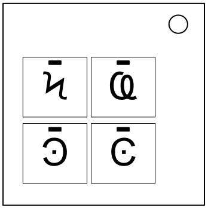
I'm not sure what these symbols are, but I suspect they have something to do with occult.

Nothing. Literally nothing. Blank. Nada.
| Display | Action |
| ← ← → ← → → | 5/4 |
| 1 3 2 4 | 3/2 |
| LEFT ARROW LEFT WORD RIGHT ARROW LEFT WORD RIGHT ARROW RIGHT WORD | 5/8 |
| BLANK | 1/3 |
| LITERALLY BLANK | 1/5 |
| FOR THE LOVE OF ALL THAT IS GOOD AND HOLY PLEASE FULLSTOP FULLSTOP. | 9/0 |
| AN ACTUAL LEFT ARROW LITERAL PHRASE | 5/3 |
| FOR THE LOVE OF - THE DISPLAY JUST CHANGED, I DIDN'T KNOW THIS MOD COULD DO THAT. DOES IT MENTION THAT IN THE MANUAL? | 8/7 |
| ALL WORDS ONE THREE TO FOR FOR AS IN THIS IS FOR YOU | 4/0 |
| LITERALLY NOTHING | 1/4 |
| NO, LITERALLY NOTHING | 2/5 |
| THE WORD LEFT | 7/0 |
| HOLD ON IT'S BLANK | 1/9 |
| SEVEN WORDS FIVE WORDS THREE WORDS THE PUNCTUATION FULLSTOP | 0/5 |
| THE PHRASE THE WORD STOP TWICE | 9/1 |
| THE FOLLOWING SENTENCE THE WORD NOTHING | 2/7 |
| ONE THREE TO FOR | 3/9 |
| THREE WORDS THE WORD STOP | 7/3 |
| DISREGARD WHAT I JUST SAID. FOUR WORDS, NO PUNCTUATION. ONE THREE 2 4. | 3/1 |
| 1 3 2 FOR | 1/0 |
| DISREGARD WHAT I JUST SAID. TWO WORDS THEN TWO DIGITS. ONE THREE 2 4. | 0/8 |
| WE JUST BLEW UP | 4/2 |
| Display | Action |
| NO REALLY. | 5/2 |
| ← LEFT → LEFT → RIGHT | 5/6 |
| ONE AND THEN 3 TO 4 | 4/7 |
| STOP TWICE | 7/6 |
| LEFT | 6/9 |
| .. | 8/5 |
| PERIOD PERIOD | 8/2 |
| THERE ARE THREE WORDS NO PUNCTUATION READY? STOP DOT PERIOD | 5/0 |
| NOVEBMER OSCAR SPACE, LIMA INDIGO TANGO ECHO ROMEO ALPHA LIMA LIMA YANKEE SPACE NOVEMBER OSCAR TANGO HOTEL INDEGO NOVEMBER GOLF | 2/9 |
| FIVE WORDS THREE WORDS THE PUNCTUATION FULLSTOP | 1/9 |
| THE PHRASE: THE PUNCTUATION FULLSTOP | 9/3 |
| EMPTY SPACE | 1/6 |
| ONE THREE TWO FOUR | 3/7 |
| IT'S SHOWING NOTHING | 2/3 |
| LIMA ECHO FOXTROT TANGO SPACE ALPHA ROMEO ROMEO OSCAR RISKY SPACE SIERRA YANKEE MIKE BRAVO OSCAR LIMA | 1/2 |
| ONE 3 2 4 | 3/4 |
| STOP. | 7/4 |
| .PERIOD | 8/1 |
| NO REALLY STOP | 5/1 |
| 1 3 TOO 4 | 2/0 |
| PERIOD TWICE | 8/3 |
| Display | Action |
| 1 3 TOO WITH 2 OHS FOUR | 4/2 |
| 1 3 TO 4 | 3/0 |
| STOP DOT PERIOD | 5/0 |
| LEFT LEFT RIGHT LEFT RIGHT RIGHT | 6/7 |
| IT LITERALLY SAYS THE WORD ONE AND THEN THE NUMBERS 2 3 4 | 4/5 |
| ONE IN LETTERS 3 2 4 IN NUMBERS | 3/5 |
| WAIT FORGET EVERYTHING I JUST SAID, TWO WORDS THEN TWO SYMBOLS THEN TWO WORDS: ← ← RIGHT LEFT → → | 1/6 |
| 1 THREE TWO FOUR | 3/6 |
| PERIOD | 7/9 |
| .STOP | 7/8 |
| NOVEBMER OSCAR SPACE, LIMA INDIA TANGO ECHO ROMEO ALPHA LIMA LIMA YANKEE SPACE NOVEMBER OSCAR TANGO HOTEL INDIA NOVEMBER GOLF | 0/7 |
| LIMA ECHO FOXTROT TANGO SPACE ALPHA ROMEO ROMEO OSCAR WHISKEY SPACE SIERRA YANKEE MIKE BRAVO OSCAR LIMA | 6/5 |
| NOTHING | 1/2 |
| THERE'S NOTHING | 1/8 |
| STOP STOP | 7/5 |
| RIGHT ALL IN WORDS STARTING NOW ONE TWO THREE FOUR | 4/9 |
| THE PHRASE THE WORD LEFT | 7/1 |
| LEFT ARROW SYMBOL TWICE THEN THE WORDS RIGHT LEFT RIGHT THEN A RIGHT ARROW SYMBOL | 5/9 |
| LEFT LEFT RIGHT ← RIGHT → | 5/7 |
| NO COMMA LITERALLY NOTHING | 2/4 |
| HOLD ON CRAZY TALK WHILE I DO THIS NEEDY | 2/1 |
| Display | Action |
| THIS ONE IS ALL ARROW SYMBOLS NO WORDS | 2/8 |
| ← | 6/3 |
| THE WORD STOP TWICE | 9/4 |
| ← ← RIGHT LEFT → → | 6/1 |
| THE PUNCTUATION FULLSTOP | 9/2 |
| 1 3 TOO WITH TWO OS 4 | 4/1 |
| THREE WORDS THE PUNCTUATION FULLSTOP | 9/9 |
| OK WORD FOR WORD LEFT ARROW SYMBOL TWICE THEN THE WORDS RIGHT LEFT RIGHT THEN A RIGHT ARROW SYMBOL | 6/0 |
| DOT DOT | 8/6 |
| LEFT ARROW | 6/8 |
| AFTER I SAY BEEP FIND THIS PHRASE WORD FOR WORD BEEP AN ACTUAL LEFT ARROW | 7/2 |
| ONE THREE 2 WITH TWO OHS 4 | 4/3 |
| LEFT ARROW SYMBOL | 6/4 |
| AN ACTUAL LEFT ARROW | 6/2 |
| THAT'S WHAT IT'S SHOWING | 2/1 |
| THE PHRASE THE WORD NOTHING | 2/6 |
| THE WORD ONE AND THEN THE NUMBERS 3 2 4 | 4/8 |
| ONE 3 2 FOUR | 3/8 |
| ONE WORD THEN PUNCTUATION. STOP STOP. | 0/9 |
| THE WORD BLANK | 0/1 |
| FULLSTOP FULLSTOP | 8/4 |

I haven't thought of anything yet...
See Appendix B for battery identification reference.

What do you get when you drop a piano down a mine shaft? A flat minor.
See Appendix A for indicator identification reference.
See Appendix B for battery identification reference.
See Appendix C for port identification reference.
See the next page for piano/keyboard reference.
| Required Symbol(s) | Further Requirements | Note Sequence |
| b | Last digit of serial number is even | Bb Bb Bb Bb Gb Ab Bb Ab Bb |
| c or # | 2 or more battery holders | Eb Eb D D Eb Eb D Eb Eb D D Eb |
| n and U | (No other requirements) | E F# F# F# F# E E E |
| C or T | RCA port is present | Bb A Bb F Eb Bb A Bb F Eb |
| B | SND indicator is present and lit | E E E C E G G |
| m or U or c | 3 or more batteries | C# D E F C# D E F Bb A |
| b and # | (No other requirements) | G G C G G C G C |
| C or m | Serial number contains a 3, 7 or 8 | A E F G F E D D F A |
| n or T or B | (No other requirements) | G G G Eb Bb G Eb Bb G |
| (No requirement) | (No other requirements) | B D A G A B D A |
Use the following graphic as a reference to how tones are mapped onto a standard 12-note piano/keyboard.
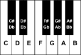
This graphic can also be found in Appendix Piano.
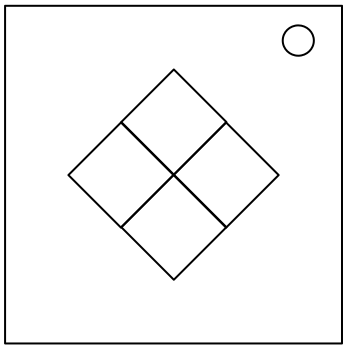
This is like one of those toys you played with as a kid where you have to match the pattern that appears, except this one is a knockoff that was probably purchased at a dollar store.
If the serial number contains a vowel:
| Red Flash | Blue Flash | Green Flash | Yellow Flash | ||
|---|---|---|---|---|---|
| Button to press: | No Strikes | Blue | Red | Yellow | Green |
| 1 Strike | Yellow | Green | Blue | Red | |
| 2 Strikes | Green | Red | Yellow | Blue | |
If the serial number does not contain a vowel:
| Red Flash | Blue Flash | Green Flash | Yellow Flash | ||
|---|---|---|---|---|---|
| Button to press: | No Strikes | Blue | Yellow | Green | Red |
| 1 Strike | Red | Blue | Yellow | Green | |
| 2 Strikes | Yellow | Green | Blue | Red | |

How many bomb defusal experts does it take to screw in a light bulb?
This module has two buttons labeled I and O and a light bulb, which is either see-through (translucent) or opaque, and is one of six colors: blue, green, purple, red, white or yellow.
If you incur a strike because you pushed a wrong button, ignore it and continue. If you incur a strike because you unscrewed or screwed in the bulb at an incorrect time, you must undo that before continuing.
Begin at Step 1 below.
While the bulb is screwed in, a long press on either button will reset the module back to Step 1. Attempting this while the bulb is out will incur a strike.
| Step 1 |
|
|---|---|
| Step 2 |
|
| Step 3 |
|
| Step 4 |
|
| Step 5 |
|
| Step 6 |
|
| Step 7 |
|
|---|---|
| Step 8 |
|
| Step 9 |
|
| Step 10 |
|
| Step 11 |
|
| Step 12 |
|
| Step 13 |
|
| Step 14 |
|
| Step 15 |
|
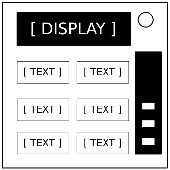
This contraption is like something out of a sketch comedy routine, which might be funny if it wasn't connected to a bomb. I’ll keep this brief, as words only complicate matters.
Based on the display, read the label of a particular button and proceed to step 2:
|
|
|
|
|
| ||||||||||||||||||||||||||||||||||||||||||||||||
|
|
|
|
| |||||||||||||||||||||||||||||||||||||||||||||||||
|
|
|
|
|
| ||||||||||||||||||||||||||||||||||||||||||||||||
|
|
|
|
|
| ||||||||||||||||||||||||||||||||||||||||||||||||
|
|
|
| ||||||||||||||||||||||||||||||||||||||||||||||||||
Using the label from step 1, push the first button that appears in its corresponding list:
READY: |
YES, OKAY, WHAT, MIDDLE, LEFT, PRESS, RIGHT, BLANK, READY, NO, FIRST, UHHH, NOTHING, WAIT |
|---|---|
FIRST: |
LEFT, OKAY, YES, MIDDLE, NO, RIGHT, NOTHING, UHHH, WAIT, READY, BLANK, WHAT, PRESS, FIRST |
NO: |
BLANK, UHHH, WAIT, FIRST, WHAT, READY, RIGHT, YES, NOTHING, LEFT, PRESS, OKAY, NO, MIDDLE |
BLANK: |
WAIT, RIGHT, OKAY, MIDDLE, BLANK, PRESS, READY, NOTHING, NO, WHAT, LEFT, UHHH, YES, FIRST |
NOTHING: |
UHHH, RIGHT, OKAY, MIDDLE, YES, BLANK, NO, PRESS, LEFT, WHAT, WAIT, FIRST, NOTHING, READY |
YES: |
OKAY, RIGHT, UHHH, MIDDLE, FIRST, WHAT, PRESS, READY, NOTHING, YES, LEFT, BLANK, NO, WAIT |
WHAT: |
UHHH, WHAT, LEFT, NOTHING, READY, BLANK, MIDDLE, NO, OKAY, FIRST, WAIT, YES, PRESS, RIGHT |
UHHH: |
READY, NOTHING, LEFT, WHAT, OKAY, YES, RIGHT, NO, PRESS, BLANK, UHHH, MIDDLE, WAIT, FIRST |
LEFT: |
RIGHT, LEFT, FIRST, NO, MIDDLE, YES, BLANK, WHAT, UHHH, WAIT, PRESS, READY, OKAY, NOTHING |
RIGHT: |
YES, NOTHING, READY, PRESS, NO, WAIT, WHAT, RIGHT, MIDDLE, LEFT, UHHH, BLANK, OKAY, FIRST |
MIDDLE: |
BLANK, READY, OKAY, WHAT, NOTHING, PRESS, NO, WAIT, LEFT, MIDDLE, RIGHT, FIRST, UHHH, YES |
OKAY: |
MIDDLE, NO, FIRST, YES, UHHH, NOTHING, WAIT, OKAY, LEFT, READY, BLANK, PRESS, WHAT, RIGHT |
WAIT: |
UHHH, NO, BLANK, OKAY, YES, LEFT, FIRST, PRESS, WHAT, WAIT, NOTHING, READY, RIGHT, MIDDLE |
PRESS: |
RIGHT, MIDDLE, YES, READY, PRESS, OKAY, NOTHING, UHHH, BLANK, LEFT, FIRST, WHAT, NO, WAIT |
YOU: |
SURE, YOU ARE, YOUR, YOU'RE, NEXT, UH HUH, UR, HOLD, WHAT?, YOU, UH UH, LIKE, DONE, U |
YOU ARE: |
YOUR, NEXT, LIKE, UH HUH, WHAT?, DONE, UH UH, HOLD, YOU, U, YOU'RE, SURE, UR, YOU ARE |
YOUR: |
UH UH, YOU ARE, UH HUH, YOUR, NEXT, UR, SURE, U, YOU'RE, YOU, WHAT?, HOLD, LIKE, DONE |
YOU'RE: |
YOU, YOU'RE, UR, NEXT, UH UH, YOU ARE, U, YOUR, WHAT?, UH HUH, SURE, DONE, LIKE, HOLD |
UR: |
DONE, U, UR, UH HUH, WHAT?, SURE, YOUR, HOLD, YOU'RE, LIKE, NEXT, UH UH, YOU ARE, YOU |
U: |
UH HUH, SURE, NEXT, WHAT?, YOU'RE, UR, UH UH, DONE, U, YOU, LIKE, HOLD, YOU ARE, YOUR |
UH HUH: |
UH HUH, YOUR, YOU ARE, YOU, DONE, HOLD, UH UH, NEXT, SURE, LIKE, YOU'RE, UR, U, WHAT? |
UH UH: |
UR, U, YOU ARE, YOU'RE, NEXT, UH UH, DONE, YOU, UH HUH, LIKE, YOUR, SURE, HOLD, WHAT? |
WHAT?: |
YOU, HOLD, YOU'RE, YOUR, U, DONE, UH UH, LIKE, YOU ARE, UH HUH, UR, NEXT, WHAT?, SURE |
DONE: |
SURE, UH HUH, NEXT, WHAT?, YOUR, UR, YOU'RE, HOLD, LIKE, YOU, U, YOU ARE, UH UH, DONE |
NEXT: |
WHAT?, UH HUH, UH UH, YOUR, HOLD, SURE, NEXT, LIKE, DONE, YOU ARE, UR, YOU'RE, U, YOU |
HOLD: |
YOU ARE, U, DONE, UH UH, YOU, UR, SURE, WHAT?, YOU'RE, NEXT, HOLD, UH HUH, YOUR, LIKE |
SURE: |
YOU ARE, DONE, LIKE, YOU'RE, YOU, HOLD, UH HUH, UR, SURE, U, WHAT?, NEXT, YOUR, UH UH |
LIKE: |
YOU'RE, NEXT, U, UR, HOLD, DONE, UH UH, WHAT?, UH HUH, YOU, LIKE, SURE, YOU ARE, YOUR |

Okay, root of 64? - 8. No, the other kind of root. 4 then! NO, THE OTHER KIND!

What is this, some kind of circuit visualization? I don't even care anymore...
To determine the right chart on the next page you will need a character of the bomb’s serial number. Use the following rules to find out which character you need. Then, on the next page, search for that character in the codes that label the charts. The chart with a code containing your character is the chart you are looking for.
|
If the numbers on this module are all different, use the last character of the serial number.
Otherwise, if there is more than one ''1'' on the module, look at the first character of the serial number.
Otherwise, if there is more than one ''7'' on the module, look at the last character of the serial number.
Otherwise, if there are at least three ''2'' on the module, look at the second character of the serial number.
Otherwise, if there is no ''5'' on the module, look at the fifth character of the serial number.
Otherwise, if there are exactly two ''8''s on the module, look at the third character of the serial number.
Otherwise, if there are more than 6 batteries or no batteries on the bomb, look at the last character of the serial number.
Otherwise, count the number of batteries on the bomb. Use that number to decide which character of the serial number you should look at. E.g.: if there are 3 batteries, look at the third character of the serial number.
|
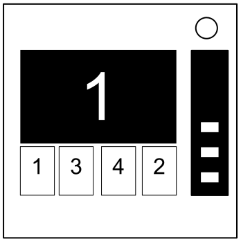
Memory is a fragile thing but so is everything else when a bomb goes off, so pay attention!
If the display is 1, press the button in the second position.
If the display is 2, press the button in the second position.
If the display is 3, press the button in the third position.
If the display is 4, press the button in the fourth position.
If the display is 1, press the button labeled "4".
If the display is 2, press the button in the same position as you pressed in stage 1.
If the display is 3, press the button in the first position.
If the display is 4, press the button in the same position as you pressed in stage 1.
If the display is 1, press the button with the same label you pressed in stage 2.
If the display is 2, press the button with the same label you pressed in stage 1.
If the display is 3, press the button in the third position.
If the display is 4, press the button labeled "4".
If the display is 1, press the button in the same position as you pressed in stage 1.
If the display is 2, press the button in the first position.
If the display is 3, press the button in the same position as you pressed in stage 2.
If the display is 4, press the button in the same position as you pressed in stage 2.
If the display is 1, press the button with the same label you pressed in stage 1.
If the display is 2, press the button with the same label you pressed in stage 2.
If the display is 3, press the button with the same label you pressed in stage 4.
If the display is 4, press the button with the same label you pressed in stage 3.

This poorly programmed lookup device is as maddening with its slow responses as it is unforgiving with ill-timed inputs. Patience required.
Query a series of two-letter codes to track down the correct answer before submitting it. This primitive lookup machine is intolerant to incomplete and excessive inputs, as well as any input while it is busy.
If the serial number contains a letter, use the leftmost letter’s numeric position in the alphabet as your base value (e.g. A=1, B=2). For no letters, use 0.
Add the last digit of the serial number multiplied by the number of batteries present.
If there is a Stereo RCA port present, double the current value.*
This value** is now the current code.
* Note: Skip this step if there is also an RJ45 port present.
** Note: Use the last two digits if the value is greater than 99. Prepend with a zero if less than 10.
Using the current code, look up the character pair. Enter that pair into the device and press “Query“.
| -0 | -1 | -2 | -3 | -4 | -5 | -6 | -7 | -8 | -9 | |
|---|---|---|---|---|---|---|---|---|---|---|
| 0- | kb | dk | gv | tk | pv | kp | bv | vt | pz | dt |
| 1- | ee | zk | ke | ck | zp | pp | tp | tg | pd | pt |
| 2- | tz | eb | ec | cc | cz | zv | cv | gc | bt | gt |
| 3- | bz | pk | kz | kg | vd | ce | vb | kd | gg | dg |
| 4- | pb | vv | ge | kv | dz | pe | db | cd | td | cb |
| 5- | gb | tv | kk | bg | bp | vp | ep | tt | ed | zg |
| 6- | de | dd | ev | te | zd | bb | pc | bd | kc | zb |
| 7- | eg | bc | tc | ze | zc | gp | et | vc | tb | vz |
| 8- | ez | ek | dv | cg | ve | dp | bk | pg | gk | gz |
| 9- | kt | ct | zz | vg | gd | cp | be | zt | vk | dc |
The response code from the device from the query in Step 2 is now your current code. Perform Step 2 an additional 2 times, using the new code each time.
After receiving the response code from the final query, look up the corresponding character pair, enter the pair into the device and press "Submit".

What kind of code? It could be a letter code! It could be a digit code! Heck, it could even be an alphanumeric code! ffffffffffffffffffffffffffffffffffffffff.
To defuse the module, you need to input the correct code. Take the displayed number at the top and follow the rules below.
Determining the code.
|
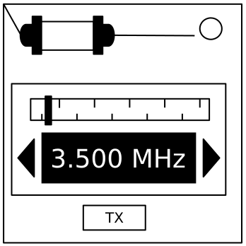
An antiquated form of naval communication? What next? At least it's genuine Morse Code, so pay attention and you might just learn something.
| How to Interpret |
|---|
|
1. A short flash represents a dot. 2. A long flash represents a dash. 3. There is a long gap between letters. 4. There is a very long gap before the word repeats. |
| If the word is: | Respond at frequency: |
|---|---|
| shell | 3.505 MHz |
| halls | 3.515 MHz |
| slick | 3.522 MHz |
| trick | 3.532 MHz |
| boxes | 3.535 MHz |
| leaks | 3.542 MHz |
| strobe | 3.545 MHz |
| bistro | 3.552 MHz |
| flick | 3.555 MHz |
| bombs | 3.565 MHz |
| break | 3.572 MHz |
| brick | 3.575 MHz |
| steak | 3.582 MHz |
| sting | 3.592 MHz |
| vector | 3.595 MHz |
| beats | 3.600 MHz |
“Why did we send a deaf person to defuse a bomb?” — Person who is no longer alive.
Press the play button to play a sound clip through the speaker. Each sound clip has a corresponding code that contains any of the four symbols $ * & #. Match the sound clip to the table below and enter the code via the four button keypad.
| Taxi Dispatch | &&&** | Dial-up Internet | *#&*& |
| Cow | &$#$& | Police Radio Scanner | **### |
| Extractor Fan | $#$*& | Censorship Bleep | &&$&* |
| Train Station | #$$** | Medieval Weapons | &$**& |
| Arcade | $#$#* | Door Closing | #$#&$ |
| Casino | **$*# | Chainsaw | &#&&# |
| Supermarket | #$$&* | Compressed Air | $$*$* |
| Soccer Match | ##*$* | Servo Motor | $&#$$ |
| Tawny Owl | $#*$& | Waterfall | &**$$ |
| Sewing Machine | #&&*# | Tearing Fabric | $&&*& |
| Thrush Nightingale | **#** | Zipper | &$&## |
| Car Engine | &#**& | Vacuum Cleaner | #&$*& |
| Reloading Glock 19 | $&**# | Ballpoint Pen Writing | $*$** |
| Oboe | &#$$# | Rattling Iron Chain | *#$&& |
| Saxophone | $&&** | Book Page Turning | ###&$ |
| Tuba | #&$## | Table Tennis | *$$&$ |
| Marimba | &*$*$ | Squeaky Toy | $*&## |
| Phone Ringing | &$$&* | Helicopter | #&$&& |
| Tibetan Nuns | #&&&& | Firework Exploding | $&$$* |
| Throat Singing | **$$$ | Glass Shattering | *$*$* |
| Beach | *&*&& |
Note: pressing play also clears whatever code you have entered.
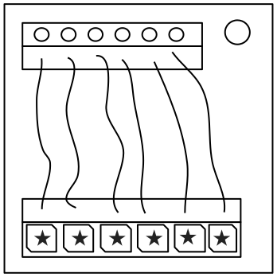
These wires aren't like the others. Some have stripes! That makes them completely different. The good news is that we've found a concise set of instructions on what to do about it! Maybe too concise...
| Wire has red coloring | |
| Wire has blue coloring | |
| Has ★ symbol | |
| LED is on |
| Letter | Instruction |
|---|---|
| C | Cut the wire |
| D | Do not cut the wire |
| S | Cut the wire if the last digit of the serial number is even |
| P | Cut the wire if the bomb has a parallel port |
| B | Cut the wire if the bomb has two or more batteries |
See Appendix B for battery identification reference.
See Appendix C for port identification reference.
A yes or no choice isn't too bad. Unfortunately you have to make five of them and any of them could be your last.
Switches need to be flipped to match the lit indicators either above or below them.
Avoid the following switch states:

The concept is simple: change a shape into another shape according to certain rules. The rules, however, are not so simple.
Starting at the shape displayed on the module, follow the flowchart and submit the first shape which is visited twice.
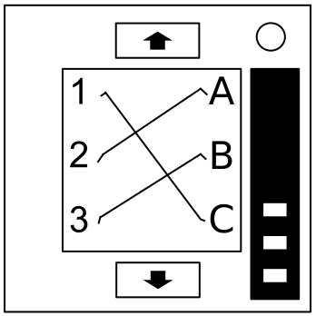
It's hard to say how this mechanism works. The engineering is pretty impressive, but there must have been an easier way to manage nine wires.
| Red Wire Occurrences | |
|---|---|
| Wire Occurrence | Cut if connected to: |
| First red occurrence | C |
| Second red occurrence | B |
| Third red occurrence | A |
| Fourth red occurrence | A or C |
| Fifth red occurrence | B |
| Sixth red occurrence | A or C |
| Seventh red occurrence | A, B or C |
| Eighth red occurrence | A or B |
| Ninth red occurrence | B |
| Blue Wire Occurrences | |
|---|---|
| Wire Occurrence | Cut if connected to: |
| First blue occurrence | B |
| Second blue occurrence | A or C |
| Third blue occurrence | B |
| Fourth blue occurrence | A |
| Fifth blue occurrence | B |
| Sixth blue occurrence | B or C |
| Seventh blue occurrence | C |
| Eighth blue occurrence | A or C |
| Ninth blue occurrence | A |
| Black Wire Occurrences | |
|---|---|
| Wire Occurrence | Cut if connected to: |
| First black occurrence | A, B or C |
| Second black occurrence | A or C |
| Third black occurrence | B |
| Fourth black occurrence | A or C |
| Fifth black occurrence | B |
| Sixth black occurrence | B or C |
| Seventh black occurrence | A or B |
| Eighth black occurrence | C |
| Ninth black occurrence | C |
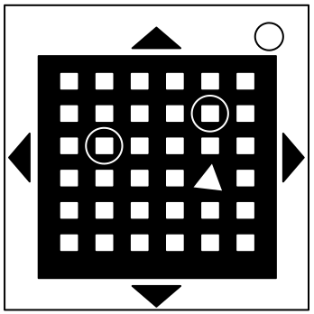
This seems to be some kind of maze, probably stolen off of a restaurant placemat.

It’s easy to identify colours. Red, Blue, Green, etc. Turns out it's a bit harder when you display a word colour in a different colour though...
|
The colour of the last word in the sequence is Red:
If Green is used as the word at least three times in the sequence, press Yes on the third time Green is used as either the word or the colour of the word in the sequence.
Otherwise, if Blue is used as the colour of the word exactly once, press No when the word Magenta is shown.
Otherwise, press Yes the last time White is either the word or the colour of the word in the sequence.
|
|
The colour of the last word in the sequence is Yellow:
If the word Blue is shown in Green colour, press Yes on the first time Green is used as the colour of the word.
Otherwise, if the word White is shown in either White or Red colour, press Yes on the second time in the sequence where the colour of the word does not match the word itself.
Otherwise, count the number of times Magenta is used as either the word or the colour of the word in the sequence (the word Magenta in Magenta colour only counts as one), and press No on the colour in the total's position (e.g. a total of 4 means the fourth colour in sequence).
|
Continuation of previous table...
|
The colour of the last word in the sequence is Green:
If a word occurs consecutively with different colours, press No on the fifth entry in the sequence.
If Magenta is used as the word at least three times in the sequence, press No on the first time Yellow is used as either the word or the colour of the word in the sequence.
Otherwise, press Yes on any colour where the colour of the word matches the word itself.
|
|
The colour of the last word in the sequence is Blue:
If the colour of the word does not match the word itself three times or more in the sequence, press Yes on the first time in the sequence where the colour of the word does not match the word itself.
If the word Red is shown in Yellow colour, or the word Yellow is shown in White colour, press No when the word White is shown in Red colour.
Otherwise, press Yes the last time Green is either the word or the colour of the word in the sequence.
|
|
The colour of the last word in the sequence is Magenta:
If a colour occurs consecutively with different words, press Yes on the third entry in the sequence.
If the number of times the word Yellow appears is greater than the number of times that the colour of the word is Blue, press No the last time the word Yellow is in the sequence.
Otherwise, press No on the first time in the sequence where the colour of the word matches the word of the seventh entry in the sequence.
|
|
The colour of the last word in the sequence is White:
If the colour of the third word matches the word of the fourth word or fifth word, press No the first time that Blue is used as the word or the colour of the word in the sequence.
If the word Yellow is shown in Red colour, press Yes on the last time Blue is used as the colour of the word.
Otherwise, press No.
|

Due to the fact that gamepads and controllers exist, we unfortunately had to settle with “Press ‘X’”.
| Number of solved modules modulo 4↓ | If there are more unlit indicators than lit indicators | If there are more lit indicators than unlit indicators | If there is an equal amount of lit and unlit indicators* |
|---|---|---|---|
| 0 | A | B | Y |
| 1 | X | Y | A |
| 2 | B | A | X |
| 3 | Y | X | B |
*0 lit indicators and 0 unlit indicators are equal amounts of both.
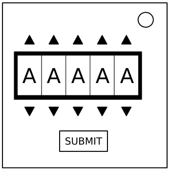
Fortunately this password doesn't seem to meet standard government security requirements: 22 characters, mixed case, numbers in random order without any palindromes above length 3.
| about | after | again | below | could |
| every | first | found | great | house |
| large | learn | never | other | place |
| plant | point | right | small | sound |
| spell | still | study | their | there |
| these | thing | think | three | water |
| where | which | world | would | write |
Sometimes, the stars have it out for you. Is this bomb a good or a poor omen?
| 0 | 0 | 1 | -1 | 0 | 1 | -2 | 2 | 0 | -1 | |
| -2 | 0 | -1 | 0 | 2 | 0 | -2 | 2 | 0 | 1 | |
| -1 | -1 | 0 | -1 | 1 | 2 | 0 | 2 | 1 | -2 | |
| -1 | 2 | -1 | 0 | -2 | -1 | 0 | 2 | -2 | 2 |
| 1 | 0 | -1 | 0 | 0 | 2 | 2 | 0 | 1 | 0 | 1 | 0 | |
| 2 | 2 | -1 | 2 | -1 | -1 | -2 | 1 | 2 | 0 | 0 | 2 | |
| -2 | -1 | 0 | 0 | 1 | 0 | 1 | 2 | -1 | -2 | 1 | 1 | |
| 1 | 1 | -2 | -2 | 2 | 0 | -1 | 1 | 0 | 0 | -1 | -1 |
| -1 | -1 | 2 | 0 | -1 | 0 | -1 | 1 | 0 | 0 | -2 | -2 | |
| -2 | 0 | 1 | 0 | 2 | 0 | -1 | 1 | 2 | 0 | 1 | 0 | |
| -2 | -2 | -1 | -1 | 1 | -1 | 0 | -2 | 0 | 0 | -1 | 1 | |
| -2 | 2 | -2 | 0 | 0 | 1 | -1 | 0 | 2 | -2 | -1 | 1 | |
| -2 | 0 | -1 | -2 | -2 | -2 | -1 | 1 | 1 | 1 | 0 | -1 | |
| -1 | -2 | 1 | -1 | 0 | 0 | 0 | 1 | 0 | -1 | 2 | 0 | |
| -1 | -1 | 0 | 0 | 1 | 1 | 0 | 0 | 0 | 0 | -1 | -1 | |
| -1 | 2 | 0 | 0 | 1 | -2 | 1 | 0 | 2 | -1 | 1 | 0 | |
| 1 | 0 | 2 | 1 | -1 | 1 | 1 | 1 | 0 | -2 | 2 | 0 | |
| -1 | 0 | 0 | -1 | -2 | 1 | 2 | 1 | 1 | 0 | 0 | -1 |
| Symbol | Element | Symbol | Planet | Symbol | Planet |
|---|---|---|---|---|---|
| Fire | Sun | Jupiter | |||
| Water | Moon | Saturn | |||
| Earth | Mercury | Uranus | |||
| Air | Venus | Neptune | |||
| Mars | Pluto |
| Symbol | Zodiac | Symbol | Zodiac | Symbol | Zodiac |
|---|---|---|---|---|---|
| Aries | Leo | Sagittarius | |||
| Taurus | Virgo | Capricorn | |||
| Gemini | Libra | Aquarius | |||
| Cancer | Scorpio | Pisces |
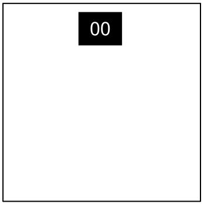
Needy modules cannot be disarmed, but pose a recurrent hazard.
Needy modules can be identified as a module with a small 2‑digit timer in the top center. Interacting with the bomb may cause them to become activated. Once activated, these needy modules must be tended to regularly before their timer expires in order to prevent a strike.
Stay observant: needy modules may reactivate at any time.
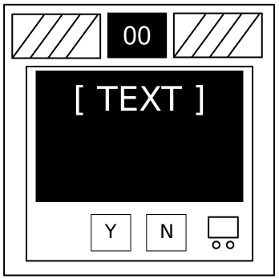
Computer hacking is hard work! Well, it usually is. This job could probably be performed by a simple drinking bird pressing the same key over and over again.

You don’t want to end up getting drunk now, do ya?

We are now at the mercy of RNGesus.
Odd: The number must be odd.
Even: The number must be even.
Present: The number must be in between 0 - 49.
Absent: The number must be in between 50 - 99.

Just don’t break the button, speed runners should know how it feels.
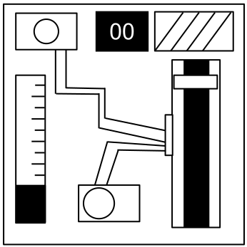
I'm going to guess that this is just meant to occupy your attention, because otherwise this is some shoddy electronics work.

Yes, you will need a QR Code scanner here to proceed.
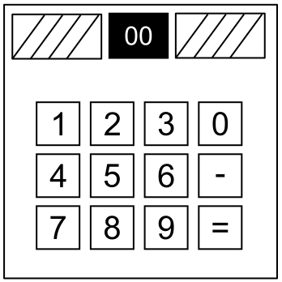
Math is still easy. But is it easy when you have to answer questions over and over to stop an explosion? Only one way to find out.
Answer the question. Enter the numbers with the keypad and press ‘=’ to submit your answer. Use ‘-’ to toggle the sign. Don’t blow up!
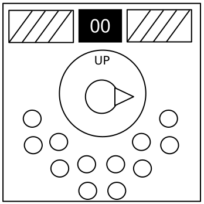
Needlessly complicated and endlessly needy. Imagine if such expertise were used to make something other than diabolical puzzles.
| X | X | X | |||
| X | X | X | X | X |
| X | X | X | |||
| X | X | X | X |
| X | X | X | |||
| X | X | X | X | X |
| X | X | X | |||
| X | X |
| X | |||||
| X | X | X | X |
| X | |||||
| X | X |
| X | X | X | X | X | |
| X | X | X | X |
| X | X | X | |||
| X | X | X | X |
X = Lit LED
Labelled indicator lights can be found on the sides of the bomb casing.
Common battery types can be found within enclosures on the sides of the bomb casing.
| Battery | Type |
|---|---|
| AA | |
| D |
Digital and analog ports can be found on sides of the bomb casing.
| Port | Name |
|---|---|
| DVI-D | |
| Parallel | |
| PS/2 | |
| RJ-45 | |
| Serial | |
| Stereo RCA |
Use the following graphic as a reference to how tones are mapped onto a standard 12-note piano/keyboard.
| AAABNN | BANANA |
|---|---|
| AACKTT | ATTACK |
| AADEGM | DAMAGE |
| AALMNP | NAPALM |
| AAOTTW | OTTAWA |
| ABELRY | BARELY, BARLEY, BLEARY |
| ABKMOO | KABOOM |
| ABLSST | BLASTS |
| ACEGHR | CHARGE |
| ACEHRR | ARCHER |
| ACELLR | CALLER, CELLAR, RECALL |
| ACGINS | CASING |
| ACNNNO | CANNON |
| ADEEST | SEATED, SEDATE, TEASED |
| ADEKPY | KEYPAD |
| ADIMRS | DISARM |
| AEFLMS | FLAMES |
| AEHRSS | RASHES, SHARES, SHEARS |
| AEKLRV | KEVLAR |
| AEMRST | MASTER, STREAM, TAMERS |
|---|---|
| AENOPW | WEAPON |
| AEPPRS | SAPPER |
| AMORRT | MORTAR |
| BNOTTU | BUTTON |
| BOORST | ROBOTS |
| BRSSTU | BURSTS |
| CDEEIV | DEVICE |
| CEERSU | RECUSE, RESCUE, SECURE |
| CEKORT | ROCKET |
| DEEFSU | DEFUSE |
| DEGITW | WIDGET |
| DELMOU | MODULE |
| DELOOP | LOOPED, POODLE, POOLED |
| DERSTU | DUSTER, RUDEST, RUSTED |
| EELRTT | LETTER |
| EEMSTX | SEMTEX |
| ENOPRS | PERSON |
| GIINRW | WIRING |